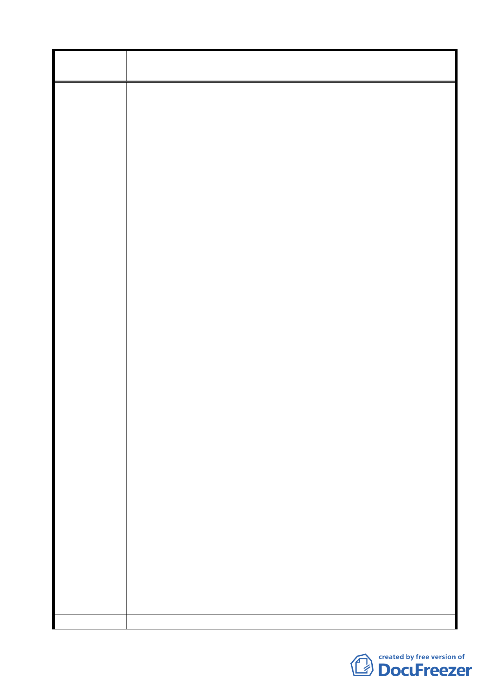

案名
建議辦法
變更臺北市士林區陽明山山仔后地區第二種住宅區為特定住宅區
細部計畫案
有財產法第 4 條第 2 項第 3 款規定，僅其股份屬國有財產，
至所有之不動產等資產，則非屬國有，其營運管理應依銀行
法及公司法等相關規定辦理」，故本行不動產之管理利用、
繳納地價稅、增值稅等均依私有財產方式辦理。
（2）本計畫案將本行以外之私有土地第二種住宅區均變更為特定
住宅區（二），即所有權人不但維持原有容積率，並增加建
蔽率 5％；相反的，本行大部分土地（約 13.86 公頃）卻比
照公有土地第二種住宅區變更為特定住宅區（一），容積率
由 120％大幅降低為 60％，影響本行權益甚鉅，同為私有土
地而有差別待遇，有違行政程序法第六條規定，行政行為不
得為差別待遇之精神。退而言之，倘如計畫內容所述，考量
陽明山地區交通服務水準已趨飽和且供水、供電也屆吃緊等
整體環境容受力問題，建議於訂定該地區「都市設計管制要
點」時限制其使用強度等，惟仍應在不影響土地所有權人權
益前提下，維持原有容積率，至原依法可建築之基準容積受
到限制部分，得移轉至其他地區建築使用。另參照「天母白
屋都市計畫變更案」案例，本行土地雖經變更為保存區，但
因其變更計畫構想為「透過容積移轉機制，保存維護計畫區
內文化資產價值之建築物，並保障土地所有權人之原有權
益」，故本行原有容積率維持不變。本都市計畫變更案倘逕
以降低本行原應有之容積率為手段，本行嚴正表示異議。
2.本案訂定之「都市設計管制要點」逾越文化資產審議委員會作
成之決議，致本行需保留更多建物，請依該決議辦理。
（1）本計畫範圍內房地前經臺北市文化資產審議委員多次現場會
勘，始於 95 年 5 月 19 日第 3 次會議決議登錄中庸一、二路
與愛富一、二、三街兩個主要區塊共 22 棟建築物為歷史建
築，復經提報 95 年 6 月 29 日第 4 次大會討論，仍維持原決
議。
（2）觀之本案訂定之「都市設計管制要點」二、特定住宅區（一）
之（三）建築物保存與維護第 3 點規定，增加本行應保存「聯
誼社」、「小福」及原美軍士官住宅型態建物共三棟，按計畫
區內之每棟房屋既經文化資產審議委員逐戶勘查、審慎評估
確定保留範圍，不應再予增列保留建物，且所謂「小福」係
美方將其中一棟住宅建物暫時挪用供作美軍宿舍區日常生
活用品供應站，美國在台協會已退租該屋多年，其建物外觀
與內部格局與一般住家無異，並無特殊保存價值，並予敘明。
1.本行持有之不動產屬私有財產，本都市計畫變更案應秉持公平
17